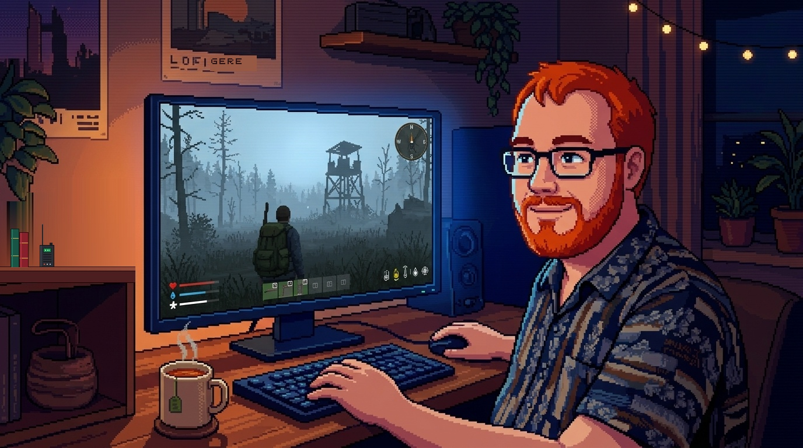
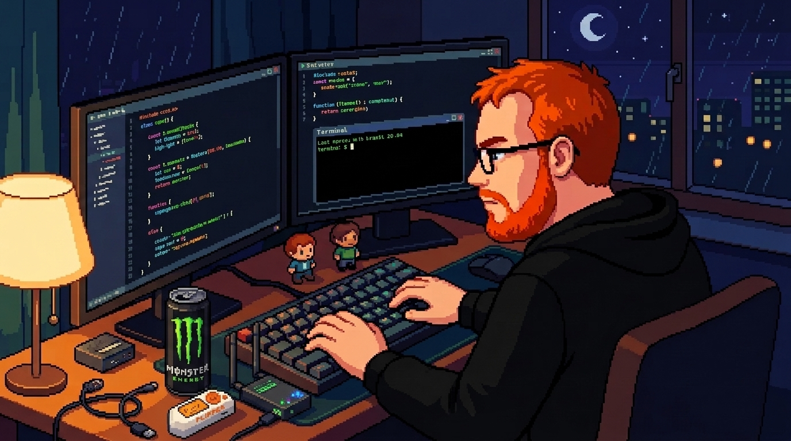
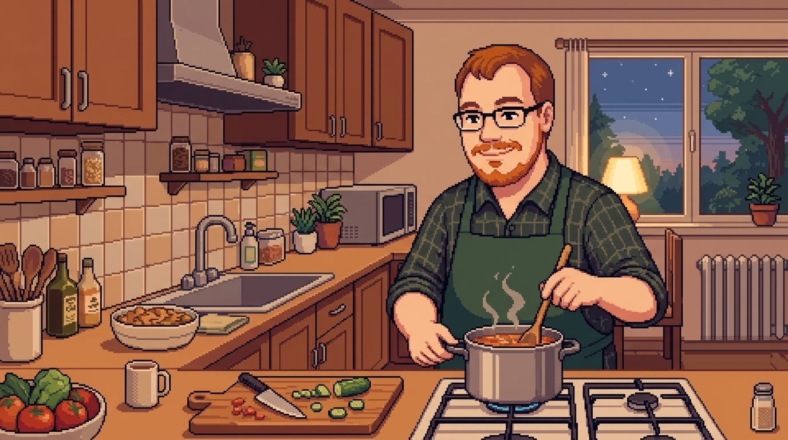
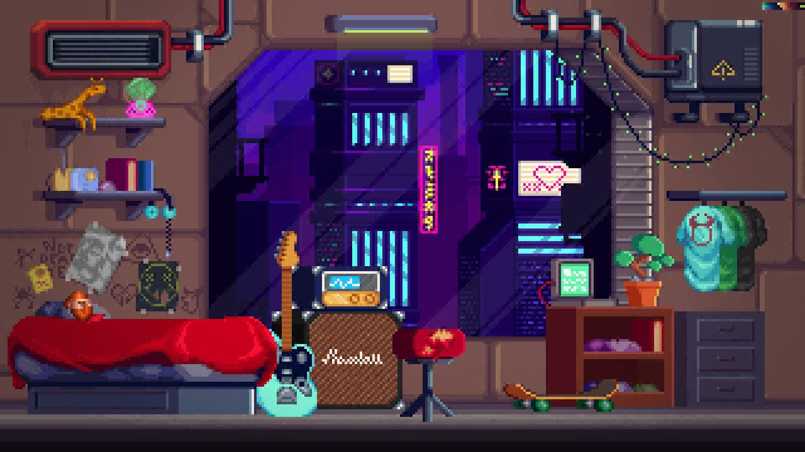

Helyszín: Számítógép • DayZ Chernarus
DayZ túlélés a ködben
„Ködös erdő, elhagyatott őrtorony, hátizsák, puska... Iránytű északra, a túlélés az igazi kikapcsolódás.”

Helyszín: Fejlesztői íróasztal
Éjszakai kódolás
„Két monitor, sötét téma, meleg kávé, eső az ablakon... Csak írom a kódot határidők nélkül.”
Helyszín: Folyóparti fenyves
Séta a folyóparti erdőben
„Csörgedező tiszta folyóvíz, fenyőillat, őszi avar és szűrődő napfény a lombok között.”

Helyszín: Panel konyha
Főzés a panel konyhában
„Klasszikus kis panelkonyha, gáztűzhely, rotyogó gulyásleves... Az ablakból látni a többi panelházat.”

Helyszín: Hálószoba • Éjszaka
Békés alvás
„Gitár letéve, meleg takaró, csillagos éjszaka a felhőkarcolók felett... Végre egy jó pihenés.”
👈 Húzd balra/jobbra a lapozáshoz 👉